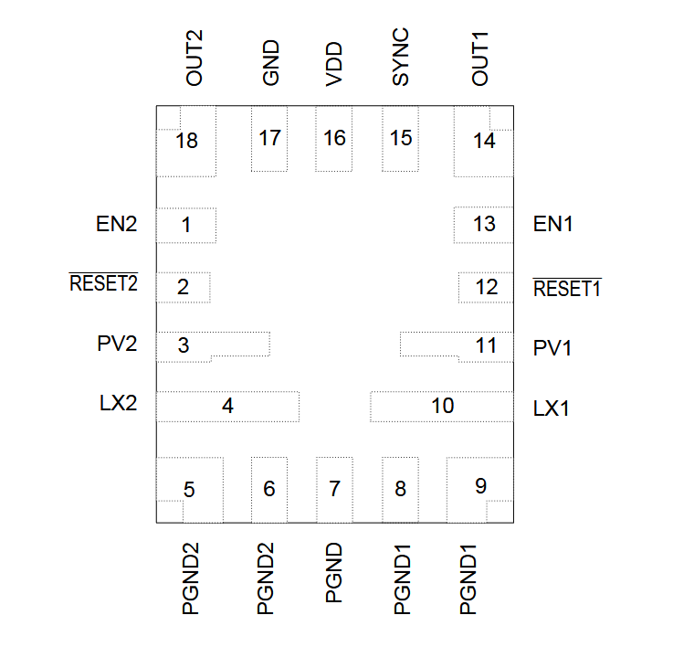

MAX20429

Pin Description
| PIN | NAME | FUNCTION |
|---|---|---|
| 1 | EN2 | OUT2 Active-High Enable Input. Drive EN2 HIGH for normal operation. The device enters soft-start on the rising edge enters soft-shutdown on the falling edge. |
| 2 | RESET2 | OUT2 Active-Low Open Drain RESET Output. External pullup resistor required if used. |
| 3 | PV2 | OUT2 Power Input Supply. Connect a 10μF or larger ceramic capacitor from PV2 to PGND2. |
| 4 | LX2 | OUT2 Inductor Connection. Connect LX2 to the switched side of the inductor. |
| 5,6 | PGND2 | OUT2 Power Ground |
| 7 | PGND | Power Ground |
| 8,9 | PGND1 | OUT1 Power Ground |
| 10 | LX1 | OUT1 Inductor Connection. Connect LX1 to the switched side of the inductor. |
| 11 | PV1 | OUT1 Power Input Supply. Connect a 10μF or larger ceramic capacitor from PV1 to PGND1. |
| 12 | RESET1 | OUT1 Active-Low Open Drain RESET Output. External pullup resistor required if used. |
| 13 | EN1 | OUT1 Active-High Enable Input. Drive EN1 HIGH for normal operation. The device enters soft-start on the rising edge enters soft-shutdown on the falling edge. |
| 14 | OUT1 | OUT1 Feedback Input. Connect to the output capacitor of Output 1. |
| 15 | SYNC | SYNC Input. Connect SYNC to GND or leave unconnected to enable skip-mode operation under light loads. Connect SYNC to PV or an external clock to enable fixed-frequency FPWM operation. |
| 16 | VDD | Internal Analog Supply. Connect a 2.2μF capacitor between this pin and GND |
| 17 | GND | Analog Ground |
| 18 | OUT2 | OUT2 Feedback Input. Connect to the output capacitor of Output 2. |